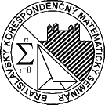

Seminár ma 2 semestre : zimnı a letnı,
ka�dı po 3 série. V ka�dej sérii je 9 úloh (1, 2a, 2b, 3a, 3b, 4a, 4b,
5a, 5b). Za ka�dú vyriešenú úlohu mo�no dosta� max. 5 bodov. Príklady
2b. a 3b. musia riešit tú študenti matematickıch tried GAMÈA, GVOZA, GJTGBB,
G. Párovská Nitra, G. Poštová KE, G. Alejová KE a všetkych èeskıch gymnázíi
so zameraním na matematiku, ktorí dosiahli aspoò v jednom závereènom poradí
najmenej 50% mo�nıch (t.j. 45 a viac) bodov. Ostatnım sa bude zapoèítava�
lepší z príkladov 2a. a 2b, resp. 3a. a 3b. Príklady 4b. a 5b. musia rieši�
tretiaci a štvrtáci, ktorí aspoò v 2 závereènıch poradiach získali min.
45 bodov. Ostatnım sa bude zapoèítava� lepší z príkladov 4a. a 4b, resp.
5a. a 5b. Limit na získanie 5-bodovej prémie je pre študentov k.-teho
roèníka 14+2k bodov. BKMS je súèas�ou zdru�enia Trojsten.
|
|

|